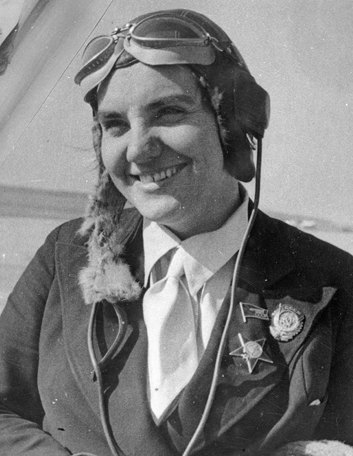

Валентина Гризодубова
Первая женщина, удостоенная звания Героя Советского Союза.

Рекордный перелёт
В 1938 году экипаж в составе Валентины Гризодубовой, Полины Осипенко и Марины Расковой совершил легендарный беспосадочный перелёт из Москвы на Дальний Восток. Самолет «Родина» пролетел 5 908 километров за 26 часов 29 минут.
Вынужденная посадка в тайге
Из-за обледенения самолёт сбился с курса. Гризодубова посадила самолёт прямо в тайгу. Женщины провели в лесу 10 дней, прежде чем их нашли спасатели. За мужество она получила Золотую Звезду Героя.
А ты знал?
Валентина Гризодубова начала летать в 14 лет! Она была настолько талантливым пилотом, что устанавливала мировые рекорды на самолётах, которые сама же и испытывала.